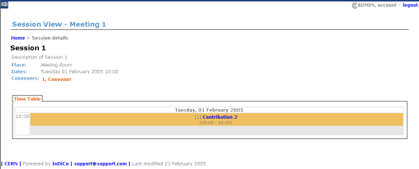

| Prev | Chapter 3. Meetings | Next |
Using the icon  as mentioned in the Management Area, you can display the item you are currently modifying, this applies to material, sessions, contributions, sub contributions and the actual meeting. The actual meeting display is what the user will be able to see when they access the meeting (See Meeting Display Area).
as mentioned in the Management Area, you can display the item you are currently modifying, this applies to material, sessions, contributions, sub contributions and the actual meeting. The actual meeting display is what the user will be able to see when they access the meeting (See Meeting Display Area).
When going into the material display from the management area you will be shown all the links and files that have been added to the material along with any details of the material.

If you have only one resource added it will open that resource, i.e if you have added just one url link when you try to access the material display it will take you to that url. This Material Display can also be veiwed from the Meeting Display Area that the user will see when viewing your meeting.
When going into the session display from the management area you will be shown all the contributions and breaks that have been added to the session.

You can click on items within the session display to proceed to the management displays for those items, i.e. each contribution. If a person is diplayed for example a convener clicking on their name will allow you to email them.
When going into the contribution display from the management area you will be shown all the details of the contribution and also which session this contribution belongs to.

You can click on items within the contribution display to proceed to the management displays for those items, i.e. the session it belongs to or any subcontributions that are under it.
When going into the sub contribution display from the management area you will be shown all the details of the sub contribution and also which contribution this sub contribution belongs to.

Any items in the Meeting Management Displays which have the modification icon  diplayed next to them allows you to go into the management area for that item.
diplayed next to them allows you to go into the management area for that item.